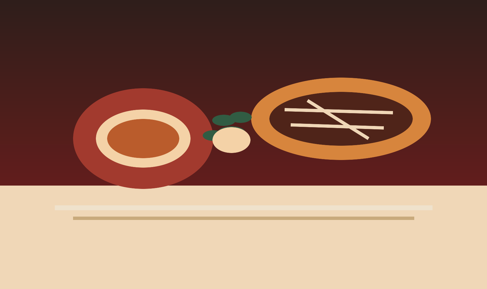

Peñas y música
Noches íntimas con artistas de la zona y repertorio popular argentino.

Cocina, memoria y escenario abierto
En Higuera Cultural reunimos recetas de raíz popular, música, talleres y charlas en una casa pensada para quedarse un rato más.
Nuestra historia
Higuera Cultural nació alrededor de una mesa larga, de esas donde siempre entra alguien más. Lo que empezó como encuentros entre vecinos se transformó en un espacio dedicado a celebrar la cocina argentina, la conversación y las expresiones artísticas que construyen identidad.
Cada receta recupera gestos de distintas regiones: el horno compartido, la olla lenta, la masa hecha a mano y el brindis después de una función. La comida es la excusa, pero el centro es el encuentro.
La propuesta
Abrimos nuestras puertas para almuerzos, cenas temáticas y fechas especiales con artistas locales. El menú acompaña la agenda cultural con platos caseros, productos de estación y precios claros.
Noches íntimas con artistas de la zona y repertorio popular argentino.
Empanadas, locro, pastas caseras, parrilla y postres tradicionales.
Encuentros de cocina, lectura, memoria oral y oficios culturales.